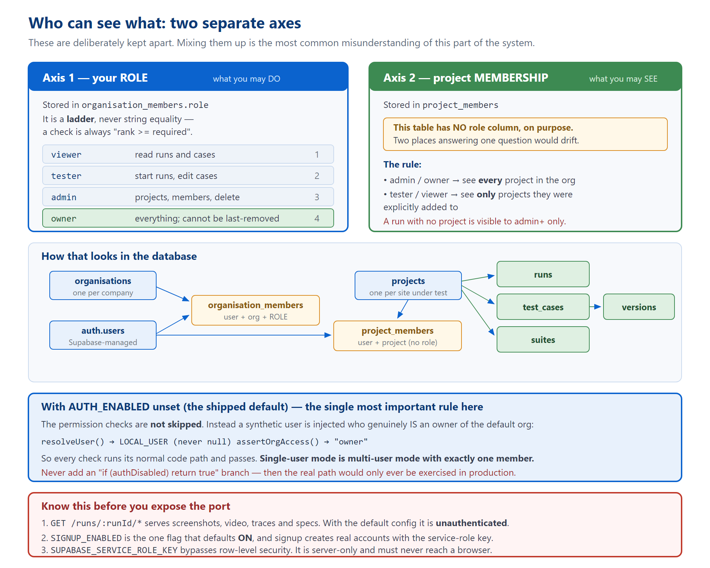

Routes, permissions, and where everything is stored
src/server/ (4,909 lines), plus src/db.ts and src/runStore.ts.
ARCHITECTURE.md owns the formal file map, DECISIONS.md the reasoning, TECH_DEBT.md the defects.
[[TOC]]
This is the first thing to get straight, because almost every "where does that live?" question resolves to it.
| Store | Authoritative for | Never holds |
|---|---|---|
Disk — runs/ | Run content: the event log, artifacts, IR, generated specs, screenshots, video. | Identity or permissions. |
| Supabase Postgres | Identity, organisations, roles, projects, and the saved case library. | Run content. Only a row saying a run exists. |
The database is in what the code calls shadow mode: it is written to, and read from for comparison, but disk still wins. Making Postgres authoritative for runs is an unshipped future step.
The whole stack is four runtime dependencies: Express 4, Zod 3, @supabase/supabase-js, and cheerio. No ORM, no build step — it runs through tsx directly.
src/server/index.ts — 1,474 lines
The only HTTP surface. It has exactly one export — app — so that supertest can exercise routes without binding a port:
const isMain = !!process.argv[1] && fileURLToPath(import.meta.url) === process.argv[1];
if (isMain) { app.listen(port); startRetentionJob(); }
| # | Middleware | What it does |
|---|---|---|
| 1 | express.json() | Body parsing. |
| 2 | express.static("public") | Serves the front end. |
| 3 | app.use("/api", …) | Requires a valid session, unless the path is public. |
| 4 | app.param("runId", …) | 400s anything that is not a well-formed run ID. |
const RUN_ID = /^[\dT-]+Z-[0-9a-f]{8}$/; // no "/", "." or ".." — cannot escape runs/
const PUBLIC_API_PATHS = new Set(["/health", "/auth/config", "/auth/signup"]);
req.path after Express strips the mount point — so entries carry no /api prefix. If you add a public route and write /api/foo instead of /foo, it will silently return 401 the moment authentication is switched on, and work perfectly in development.
There are 57. Rather than list them flat, here is what exists and what guards it.
| Group | Count | Typical guard | Notable members |
|---|---|---|---|
| Artifacts | 1 | custom | GET /runs/:runId/* — see §3, the most security-sensitive route in the server. |
| Running | 5 | tester on that run | POST /api/runs, …/credentials, …/case-selection (+ its AI rewrite) |
| Watching a run | 5 | viewer on that run | …/state (the one the UI uses), …/events (SSE, unused), …/page-elements |
| Run history | 2 | viewer / admin | GET /api/runs, DELETE /api/runs/:runId |
| Public | 3 | none | /api/health, /api/auth/config, /api/auth/signup |
| Session | 2 | authenticated | /api/auth/me, /api/auth/bootstrap |
| Projects | 7 | viewer / admin | CRUD plus member management |
| Organisations | 6 | org admin | members, roles, addable users |
| Suites | 8 | tester / admin | CRUD, cases in a suite, reordering |
| Cases | 16 | viewer / tester / admin | read, edit, versions, steps, re-ground jobs, duplicate, rewrite |
| Library ↔ runs | 2 | tester | POST /api/runs/:runId/cases/:caseId/save, POST /api/replay |
requireAuth — are you signed in at all?requireRole(x) — do you have role x in your own organisation?requireRunRole(x) — do you have role x in the organisation that owns that run, and can you see its project?requireOrgRole(x) — do you have role x in the organisation named in the URL?const RUNS_DIR = path.resolve("runs");
app.get("/runs/:runId/*", async (req, res) => {
const rel = req.params[0] ?? "";
const abs = path.resolve(RUNS_DIR, req.params.runId, rel);
if (!abs.startsWith(RUNS_DIR + path.sep)) return res.sendStatus(403); // traversal guard
if (!(await canAccessRun(req, req.params.runId))) return res.sendStatus(403);
res.sendFile(abs, (err) => { if (err && !res.headersSent) res.sendStatus(404); });
});
Five things about it:
/api, so it never passes through the auth middleware. It resolves the user itself.startsWith check blocks escaping runs/ regardless of anything else.<img> or <video> tag cannot send an Authorization header, so the token is also read from an sb-access-token cookie. Without that, every screenshot would 401 the moment auth was enabled.canAccessRun returns true unconditionally when tenancy cannot be enforced — which is the default, because AUTH_ENABLED is unset. The comment in the source reads // no-op today, and it is literal.
express.static("runs"), which was worse), but treat it as the first thing to fix before exposing this beyond localhost. It is also the reason the "credentials never touch disk" rule exists at all. See TECH_DEBT.md TD-14.

Figure 1 — the two axes, the tables behind them, and what changes when the flag is off.
viewer < tester < admin < owner. Checks are always rank >= required, never string equality, so an owner satisfies every lesser requirement automatically.project_members has no role column. Duplicating the role ladder per project would put two places in charge of answering one question, and they would drift. Membership grants visibility, never entry — which is also why adding someone to a project requires that they already be an organisation member.
viewer in the default organisation with zero project assignments. It looks broken. It is the intended state — someone has to add you to a project.
authz.tsQuoted from its own header, and worth memorising:
AUTH_ENABLED unsetThis is the single most important design rule in the server layer, and it is easy to get wrong when adding a feature.
// auth.ts
if (!isAuthEnabled()) return LOCAL_USER; // never null
// authz.ts
const LOCAL_MEMBERSHIPS = [{ organisationId: DEFAULT_ORG_ID, role: "owner" }];
if (!canEnforceTenancy()) return "owner";
if (authDisabled) return true branch. That is the documented failure mode: it means the real permission code is only ever exercised in production, where you find out it is wrong.
[], not "everything".project_id is null is visible to admins and owners only — nobody can be assigned to "no project", so treating it as public would be a hole that widens as unfiled runs accumulate.invalidateMemberships(userId) directly, so a demotion takes effect immediately.
visibleProjectIds returns null to mean "no restriction" (admin/owner) and an empty Set to mean "nothing visible". Getting those two confused inverts the check.
src/server/signup.ts — 183 lines
Accounts are created server-side because Supabase's public sign-up hangs on this project's free-tier mailer. It uses two different keys on purpose:
email_confirm: true, so no confirmation mail is ever attempted.The reason for the second step: a session derived from the service-role key would not be a normal user session, and row-level security would not apply to it.
SIGNUP_ENABLED defaults to ON. It is the one documented exception to this project's "every flag defaults off" rule. The justification is that the sign-up screen only exists when AUTH_ENABLED=true, which is itself off — so the shipped default is still "no sign-up".
SIGNUP_ENABLED=false before this port is reachable by anyone else.
src/server/organisations.ts — 332 lines
Two invariants are enforced here rather than in routes, because they are properties of the data:
DEFAULT_ORG_ID. This is wrong the moment two unrelated customers share an instance — it needs an invite token or a domain rule first.
listAddableUsers returns every registered email address to any admin. Fine for one company; a privacy leak in a multi-customer instance. It also pages the user directory at 1,000 accounts per call.
src/db.ts — 348 lines
Supabase-hosted Postgres, accessed only through PostgREST calls — no SQL client, no ORM, and no .sql file anywhere in the repository. The schema lives in the Supabase project and is applied by migrations the code references by name. The table description below was reconstructed from the queries.
| Table | Columns as queried | Notes |
|---|---|---|
organisations | id, name | Seeded. Never created at runtime. |
organisation_members | organisation_id, user_id, role, created_at | The join every authorization read goes through. Ordered by created_at for "primary org". |
projects | id, organisation_id, name, base_url | name doubles as the URL key for auto-filed projects. |
project_members | project_id, user_id | No role column, on purpose. |
runs | id, organisation_id, project_id (nullable), started_by, prompt, url, status, started_at | id is the run-ID string, not a UUID. |
suites | id, project_id, name, created_by | |
suite_cases | suite_id, test_case_id, position | Join table — a case can be in several suites. Cascades on suite delete; cases survive. |
test_cases | id, project_id, title, feature, ir (jsonb), current_version, source_run_id, last_run_status, … | ir is validated by the real Zod schema on every read and write. |
test_case_versions | test_case_id, version, ir, change_note, saved_by, saved_at | v1 is written with the case, or Compare has nothing to diff. |
run_cases | run_id, test_case_id, case_index, status | A join table, not a column on runs — one replay runs many cases. |
DB_ENABLED is not the switch it looks like.
SUPABASE_URL and SUPABASE_SERVICE_ROLE_KEY are set, regardless of DB_ENABLED — and return 503 whenever they are not, regardless of any flag. So "local flag-off mode" means runs, artifacts and polling all work while roughly half the route table 503s. That is expected, not a bug.
AUTH_ENABLED=true with DB_ENABLED=false and a service key present. Tenancy silently switches off (with a warning in the log) while the library keeps reading and writing real rows. The code calls this "a misconfiguration, not a supported mode."
void (async () => { ... })(); // errors are console.error'd, never thrown
A run is long, expensive and user-visible. A database hiccup must never fail it, delay it, or lose it.
recordRunStarted fires before the concurrency semaphore. So a queued run has a database row and no directory on disk — invisible in history, and the shadow comparison would report it as "in the database but not on disk". Not a bug; worth recognising.
src/runStore.ts — 249 lines
Its own header calls it "the one seam that separates demo from product": the entire interface is append() and read(), so swapping the backing store later is a change to this file's body only.
export const store: RunStore; // append(event) / read(runId) export function allRunIds(): string[]; export function summariseRun(runId: string): RunSummary; export function listRuns(ids?: string[]): RunSummary[];
Volume 1, Figure 3 has the full folder map. Three behaviours worth knowing:
startedAt is the directory's filesystem creation time, not the timestamp in the run ID. Copying or moving a run directory changes where it appears in history.
Two synthetic events get invented on read. Legacy runs with no event log get a reconstructed stream. More usefully: a run with an event log but no terminal event, whose ID predates the current process start, gets a synthetic error reading "This run was interrupted — the server restarted before it finished." Without it, the UI would poll such a run forever.
const visible = await filterRunsForUser(userId, allRunIds().map(runId => ({ runId })));
res.json(listRuns(visible.map(r => r.runId)));
Capping first let every unfiled directory on disk consume one of the twenty visible slots. History then shrank as those accumulated, and read from the outside as "no runs happened" — measured at 20 directories on disk yielding 2 visible rows. Filtering IDs is also the cheap half; summarising means parsing a full event log per run.
src/server/concurrency.ts — 36 lines
One module-level semaphore, default 3, shared by runs and replays. Each run launches Chromium; uncapped, one browser per request means running out of memory.
The subtle part is that a waiting caller inherits the finishing caller's permit rather than re-acquiring:
finally {
const next = this.waiters.shift();
if (next) next(); // hand the permit straight over — active is unchanged
else this.active--;
}
Incrementing after a release-and-reacquire would open a window where a fresh arrival steals the freed slot and concurrency exceeds the maximum.
MAX_CONCURRENT_RUNS= (empty) → ?? does not catch the empty string → Number("") is 0 → the constructor throws at module load and the server will not boot.
MAX_CONCURRENT_RUNS=abc → NaN → the < 1 check passes, so nothing throws, but active < max is never true → every run parks forever. Silent deadlock.
runLimit. N concurrent editors means N unbounded browsers.
The rule: real credentials never touch disk or the database. They live in process memory for the length of one walk, and stored steps keep an ${env:...} reference instead.
SOURCE (env first, then the browser prompt)
↓ in-memory Map only — never persisted
applyCredentials() writes "${env:TEST_PASSWORD}" → 04-ir.json holds the SENTINEL
generateSpec() emits process.env.TEST_PASSWORD ?? "" → the spec holds a REFERENCE
runSpec() injects the real value into the CHILD PROCESS ENV only
↓
scrubServedSecrets() cleans results.json, final-page.txt, and error attachments afterwards
TEST_USERNAME and TEST_PASSWORD — never derived from model output or user text, so a crafted prompt cannot smuggle another variable into generated code.
What is deliberately never written: the request body is never logged; the credential event carries only {url, fields} and then {provided: true|false}, never a value; and 00-input.json stores the redacted prompt. That last one was a real bug — writing the prompt verbatim put plaintext passwords on a publicly served path.
TEST_USERNAME / TEST_PASSWORD in the environment silently suppresses every credential prompt — in runs, in the case editor, and in replay. Convenient for an operator, confusing if you are sitting there waiting for a dialog that will never appear.
runReplay accepted a credentials argument, but its only caller never passed one. So the spec's process.env.TEST_USERNAME ?? "" typed an empty string into the login form. The sign-in failed silently and the case died several steps later on a completely unrelated assertion. Confirmed on run 2026-08-31T06-30-26-597Z-1c2a719e.
?? "" fallback produces a wrong answer instead of an error.
| File | Lines | Job, and what to know |
|---|---|---|
runRegistry.ts | 37 | Live SSE fan-out. Holds only open sockets — nothing that matters is lost on restart. Durability is the orchestrator's job. |
pendingCredentials.ts | 55 | Parks a promise until you answer. In memory on purpose — it holds a resolver and real credentials. Note run IDs and job IDs share one keyspace. |
resolveCredentials.ts | 39 | The one place the "environment first, prompt second" policy lives. Its comment warns: the emit is not optional — without the event the UI never renders the form and the caller waits out the full timeout against a screen with nowhere to type. |
pendingCaseSelection.ts | 62 | Same pattern for the review gate. 10-minute default. |
caseAccumulator.ts | 86 | The accepted-case pool across gate rounds. MAX_ACCUMULATED_CASES is read at module load, unlike most flags — a test cannot flip it. |
caseHistoryLedger.ts | 99 | Feeds the next round's prompt so it stops re-proposing rejected cases. Note normalizeTitle is duplicated here and in caseAccumulator; identical today, nothing pins them. |
gateCaseEdits.ts | 126 | Folds your gate edits into the batch by position. Index stability is the invariant: edits address existing slots, additions append, nothing is ever spliced out — "remove this" arrives as "not selected", so the case still occupies its slot and is still recorded as rejected. |
regroundJobs.ts | 120 | Background re-ground jobs. In memory, not on disk — writing them under runs/ would put them in run history and the shadow comparison. Jobs are personal: another account is refused even in the same organisation. |
rewrite.ts | 421 | Three model proposers, none of which ever write. See below. |
retention.ts | 73 | Optional pruning of old runs. Three guards: a hard 24-hour floor regardless of setting, older than the window, and the run must be terminal. |
projects.ts | 354 | Project CRUD and auto-filing by URL. deleteProject refuses with 409 while it still holds runs rather than orphaning them. |
library.ts | 747 | Suites, cases, versions, replay loading. See below. |
All three functions in rewrite.ts return step text, never IR. Approval therefore travels the ordinary parse → re-ground → version path. This is the project rule "a model proposes, it never writes" expressed in code.
toIR.
library.ts that will catch youThe IR schema is imported, never restated. parseIr runs the real Zod schema on every read and write. A hand-maintained copy would be documentation drift reappearing as code.
if (Object.keys(update).length === 2) { /* nothing to update */ }
updated_at and updated_by are always set, so two keys means no real change. Adding a third always-set column would silently break this check.
Optimistic concurrency is re-checked at write time. updateCase re-validates expectedVersion against the row it is about to write, closing the window between the initial check and the write — which can be sixty seconds later, after a browser walk.
countCasesByProject counts every case in the project, not the sum of its suites — a suite-less case must still appear. So a project's number can legitimately exceed the sum of its children's.
npm run serve has no watch. Editing src/ does nothing until you restart.runs/ are unauthenticated by default.DB_ENABLED does not gate the library. Half the route table 503s without a service-role key, whatever the flags say.AUTH_ENABLED=false runs the same permission code, satisfied by a synthetic owner. Never branch around it.public/app.js reads them in dozens of places. New capability → new route. Existing route → optional additive fields only./state.normaliseUrlKey (server ↔ app.js) and formatIrStep (server ↔ app.js). Only the second has a test holding it in place.Before calling anything done: npx tsc --noEmit must be clean, and npx vitest run must pass. CI (.github/workflows/test.yml) runs both on every push and pull request — but it is not a merge gate, so a red run can still land. Run them yourself (TECH_DEBT.md TD-20).